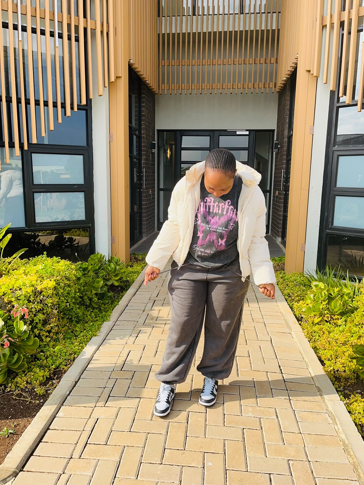

I am Zizile Jako — an Advanced Diploma in ICT student in Application Development, tutoring second-year students in Information Systems 2 at Nelson Mandela University.
I am not just a tutor. I am a translator of dreams. I take scary words like databases, ERDs and SDLC, and turn them into stories about spaza shops, libraries and real life — until a student whispers: "Ohhh, now I get it!"
I tutor because I remember what it feels like to be lost in a lecture, copying notes I didn't understand. I promised myself: no student of mine will ever feel alone in IS2.

"If they don't understand, I explain differently — not louder."
— My promise to every second-year student